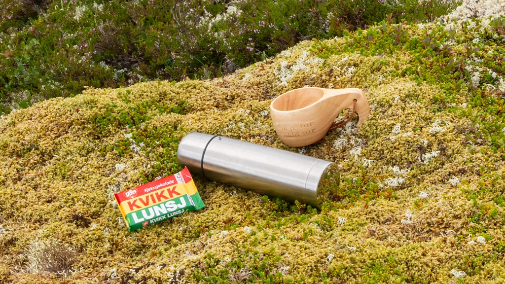

Jailed HK tycoon's 'teeth rotting and fingernails falling off', daughter tells BBCThe daughter of Jimmy Lai tells the BBC that her father's health is deteriorating in prison.44 mins agoAsiaThe 'thorny' issues that threaten to derail a Russia-Ukraine peace dealTwo of the main sticking points involve territory and the fate of Europe's biggest nuclear plant, which is currently occupied by Russia.15 hrs agoEuropeJailed HK tycoon's 'teeth rotting and fingernails falling off', daughter tells BBCThe daughter of Jimmy Lai tells the BBC that her father's health is deteriorating in prison.44 mins agoAsiaThe 'thorny' issues that threaten to derail a Russia-Ukraine peace dealTwo of the main sticking points involve territory and the fate of Europe's biggest nuclear plant, which is currently occupied by Russia.15 hrs agoEuropeLIVEEurostar services running but Channel Tunnel drivers warned of delays in CalaisA power supply problem caused major disruption on Tuesday, with travellers warned to expect more delays today.Israel to bar 37 aid groups from GazaThe move was criticised by foreign ministers from from 10 countries including the UK, who said the new rules were "restrictive" and "unacceptable".10 hrs agoMiddle EastMachu Picchu train crash leaves one dead and dozens injuredA train driver died and at least 40 people were injured in the crash on the single-track line to Machu Picchu.8 hrs agoLatin AmericaTatiana Schlossberg, granddaughter of John F Kennedy, dies aged 35 She shared her cancer diagnosis in an essay last month, writing that she had less than a year to live. 12 hrs agoUS & CanadaThailand releases 18 Cambodian soldiers held since JulyThe release is part of a new ceasefire deal after weeks of deadly clashes along the Thai-Cambodia border.3 hrs agoAsiaOnly from the BBC12 of the best TV shows to watch this JanuaryFrom the return of HBO's award-winning medical drama to a new Game of Thrones prequel and the latest Harlan Coben mystery on Netflix.Six facts to help avoid a hangoverFrom red wine headaches to mixing drinks, here's what to know about hangovers ahead of New Year's Day.DocumentariesBritain's Most Beautiful RoadAncient EarthCivilizations: Rise and FallMaking Sense of Cancer with Hannah FryLucanKing George and Queen Mary: The Royals Who Rescued the MonarchyThe Travel ShowShakespeare: Rise of a GeniusThe World War: 1914 - 1945Exploring India with Bettany HughesDating Apps: The Inside StoryGordon Buchanan: My Epic Camel AdventureThe Kingdom: The World's Most Powerful PrinceAntiques RoadshowWonderland: The Story of ChristmasA Very British Yule LogBest Audio of the YearThe Global StoryIs social media dead?SaveYou're Dead to MeRenaissance Beauty (Radio Edit)SaveGood Bad BillionaireElon Musk: Money, memes and MarsSaveHistory's HeroesCurt Bloch and the Underwater CabaretSaveWitness HistoryMaking JawsSaveBusiness DailyBusiness Daily meets: Jimmy ChooSaveThe Documentary PodcastMake me perfect: Manufacturing beauty in ChinaSave13 Minutes Presents: The Space ShuttleThe Space Shuttle: 1. The spaceplaneSaveMore newsIsiah Whitlock Jr: The Wire and Veep actor dies at 71Whitlock was known for his notably elongated, profane catchphrase, which he used on The Wire and in films.7 hrs agoUS & CanadaProtests spread across Iran for third day after currency hits record lowThe Iranian rial hit a record low against the US dollar on Sunday, prompting shopkeepers in Tehran to stage protests, which have quickly spread. 16 hrs agoMiddle EastEx-Australia batter Martyn in coma with meningitisFormer Australia batter Damien Martyn, 54, who played 67 Test matches, is in an induced coma in a Queensland hospital after being diagnosed with meningitis.. 5 hrs agoAustraliaFemale artists (and Oasis) drove UK music sales in 2025Taylor Swift was the biggest-seller, with Olivia Dean and Sabrina Carpenter also topping the charts.9 hrs agoCultureFamous faces who left us in 2025Pope Francis, Ozzy Osbourne and Diane Keaton are among those who died this year.1 hr agoThieves use drill to steal €30m in German bank heistGelsenkirchen Police say thieves used the "quiet" days after Christmas to break into the high street branch.16 hrs agoEuropeUK company sends factory with 1,000C furnace into spaceA factory in space has been switched on and has reached temperatures of about 1,000C.9 hrs agoScience & EnvironmentEditor's picksNorway's incredibly rare Viking ship discoveryIn 1904, an excavation began on a Viking longship buried some 1,000 years ago. It remains one of the world's best-preserved Viking artefacts.Time FrameHow close is too close to a hippo?A bold leopard cub pushes his luck with a huge and threatening hippo in Nsefu in Zambia.WildlifeThe Greek island holding the secret to a long lifeOn Ikaria, people on average lead longer, happier lives. A resident of the Greek 'island of immortals' shares her tips for longevity.The SpeciaListHow the first 'sensational' picture of Lady Diana came aboutIt starts nearly 40 years ago, when a teenage girl is pulled out of obscurity and thrust into the spotlight.HistoryCan you learn to predict the future?Researchers believe the ability to predict the future is a skill that can be learned and developed.PsychologyHow to make better New Year's resolutionsHave you 'broken' any News Year's resolutions yet? If so, you're not alone - on average 80% of resolutions fail.Science & HealthWhy ancient calendars still rule the worldVirtually all our cultures use at least one kind of calendar to mark vital annual occasions.NatureThe woman who checked in and never checked outA mysterious 1892 death at a California hotel sparked ghost stories that still intrigue visitors today.Culture & ExperiencesYear AheadStyle trends to look out for in 2026: Bold colours, tassels and loud luxuryThese are some of the biggest trends you can expect to see hitting stores in the new year.Hamnet to Sinners: 12 films to look out for as Oscars race beginsThe 20 best places to travel in 2026Who are favourites to win the 2026 World Cup?Health and WellnessWhat your fingernails can reveal about your healthFrom the mysterious white flecks that sometimes appear on nails to unusual ridging or changes in thickness, what do these features really mean?Can you lose weight on an 'oatzempic' diet?Drugs like Ozempic have allowed many people to lose weight they were unable to shift before. Could a diet have the same effect without the need for a prescription?How to embrace an ageing faceMuch like our other organs, our skin begins to age from the moment we are born. Here's how you can look after your skin while embracing an ageing face.Best of World's TableHow Dubai chocolate sparked a global frenzyInvented to satiate pregnancy cravings, Dubai chocolate is a rare combination of creativity, flavours and social media success that has broken all industry records.The baffling purple honey only found in the US SouthThe return of Sicily's ancient 'white gold'The controversial snack that fuels Norwegian tripsBBC MaestroGet a good night's sleep with Stephanie RomiszewskiJoin the world-leading sleep expert to bid goodnight to sleep anxiety and rediscover the joy of restful nights.Sharpen your time management with Oliver BurkemanLearn practical time management skills that will give you more time for what's important with best-selling author Oliver Burkeman.Transform your health with Professor Tim SpectorJoin health guru Tim Spector as he teaches you about the different aspects of gut health, nutrition and healthy eating habits.Learn the art of influence with Evy PoumpourasUnderstand how to read people and build lasting confidence with former US Secret Service agent Evy Poumpouras.Master cocktail making with Ago PerroneShake up the party with cocktail-making techniques from one of the world's best mixologists, Ago Perrone.Launch your business with Steven BartlettJoin the youngest judge in Dragons' Den history and creator of Diary of a CEO as he shares 16 principles to make your business a success.Master the craft of cooking with Marco Pierre WhiteGo beyond recipes and uncover the art of cooking with the youngest chef ever to be granted three Michelin stars.Elevate your design skills with Paula ScherJoin the creative mind behind iconic designs and album covers as she explains the rules of great graphic design.Learn the art of magical storytelling with Isabel AllendeJoin the bestselling author to learn the craft of extraordinary writing and become inspired by her masterpieces.Sing like the stars with Eric VetroLevel up your singing skills with the vocal coach behind stars like Ariana Grande and Sabrina Carpenter.US & Canada newsTrump administration says it's withholding childcare funds from Minnesota amid fraud allegationsIn a recent viral video, a conservatice YouTuber alleged some migrant-run centres in the state were committing fraud.Suspect confessed he planted 6 Jan pipe bombs, prosecutors sayHousing, Europe ties, economy... what Canadians are hopeful for in 2026Three hikers found dead on California's Mt Baldy, including teen who fell 500 feetMore world newsGuinea junta chief wins presidency in controversial electionThe victory, which gives the junta leader a seven-year mandate, was widely expected.Brazil's Bolsonaro undergoes third medical procedure for hiccupsSaving South Africa's threatened albatross from lethal fishing linesThe viral moments that grabbed India's attention this yearBusinessGold and silver see rollercoaster end to blockbuster yearThe price of gold soared by more than 60% this year to hit a record high of more than $4,549.Work continues to fix Eurotunnel issue after thousands hit with travel disruptionDisney to pay $10m over alleged children's privacy law violationsFlight to edge of space left me harassed and depressedSport'It's all going right for Arsenal' - can they make it count this time?Arsenal end 2025 with a statement win and clear at the top of the Premier League - can they make it count this time?We feel closer to him in Australia - Josh Baker's parents on dealing with lossBBC Sport's 2025 Quiz: 12 months, 12 questions, how many can you get?Rookie Edgecombe earns 76ers dramatic late winLatest Sport audioTest Match Special PodcastThe 2025 TMS AwardsSaveFootball DailyEuro Leagues: End of Year SpecialSaveMore Than The ScoreMore than 2025: The making of Mondo DuplantisSaveFPL Podcast from BBC SportYou're Better Than That: FPL vs TCVSaveFootball DailyThe Debrief: Arsenal On TopSaveBBC Women's Football WeeklyHome Again: How the Lionesses retained their Euros titleSaveTest Match Special PodcastNo Balls: Madness in Melbourne & menstrual moansSaveMore Than The ScoreMore than 2025: Victor Wembanyama's giant leapsSaveTechA wave paralysed me but AI could help me walk againDan Richards, 37, from Swansea was injured in a freak accident on New Year's Eve in 2023.Man uses AI to walk after being paralysed on a New Year's Eve swimGTA 6 and everything else: What to watch in video games in 2026Man paralysed by wave says technology could help him walk againScience & healthDo saunas really boost your health?Saunas and cold water swims are booming, but what does science actually say about the benefits?My son was given world's most expensive gene therapy drug - now he can walkA sunbed tan is really not worth it, says skin cancer survivorThe words from my dad that saved me as a new parentCultureRonan Keating on his New Year's Eve show, resolutions, and Boyzone reunionRonan Keating says he hopes his BBC One concert will help people who are finding things difficult. George Clooney, wife Amal and their twins awarded French citizenshipFrench right pushes for national tribute to film star Brigitte BardotSpanish woman who found fame for botching fresco restoration diesArts Seven of the greatest rivalries in art historyThere is an art to rivalry. Mastering its rules has, since ancient times, shaped cultural history over millennia.The ancient art of Japanese bonsaiThe Salt Path and 2025's most scandalous booksThe truth about Tudor England's 'most hated woman'WatchIs this how AI might eliminate humanity?A research paper predicts AI autonomy by 2027 could lead to human extinction within a decade.See moreTravelA first-timer's guide to MexicoA guidebook writer's itinerary for what to eat, see and experience across Mexico on your first visit.Turkey's caffeine-free coffee alternativeSeven live music experiences worth travelling for in 2026A freeski champion's guide to WhistlerWorld's TableThe Mexican beer you can only buy at ChristmasMexico is the world's largest exporter of beers. But one of its most beloved brews, Noche Buena, is only available for just a few weeks each year.Sorry, France, the world's best bubbly is BritishWhy travellers keep queueing for viral foodThe hidden history of a classic American dishEarthThe sounds revealing mysteries of deepest whalesBeaked whales are rarely spotted. Now scientists are using underwater sounds to help identify these elusive creatures.Photographing the hidden world of slime mouldGreat white sharks face extinction in Mediterranean, say researchersNepal to scrap 'failed' Mount Everest waste deposit schemeVideoBBC Talking Movies top 10 films of 2025Talking Movies presenter Tom Brook looks back at 2025 to pick the top 10 films of the year.Köttbullar: The secret behind the iconic Swedish meatballsThe AI toys taking over Christmas shopping listsThe forgotten underground river that shaped ParisDiscover more from the BBCUS Politics UnspunNo noise. No agenda. Just expert analysis of the issues that matter most from Anthony Zurcher, every Wednesday.Download the BBC appClick here to download the BBC app for Apple and Android devices.Sign up to World of BusinessGain the leading edge with global insights for the boardroom and beyond, in your inbox every Wednesday.Register for a BBC accountDon't have time to read everything right now? Your BBC account lets you save articles and videos for later. Sign up for the Essential ListThe week's best stories, handpicked by BBC editors, in your inbox every Tuesday and Friday.